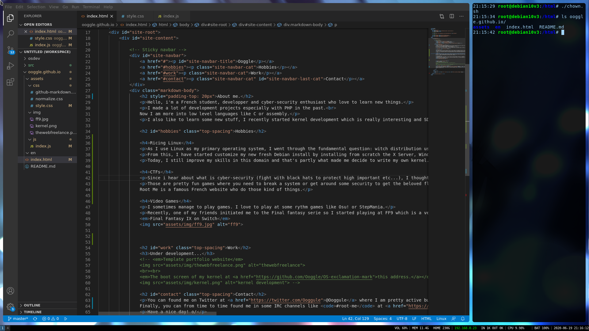
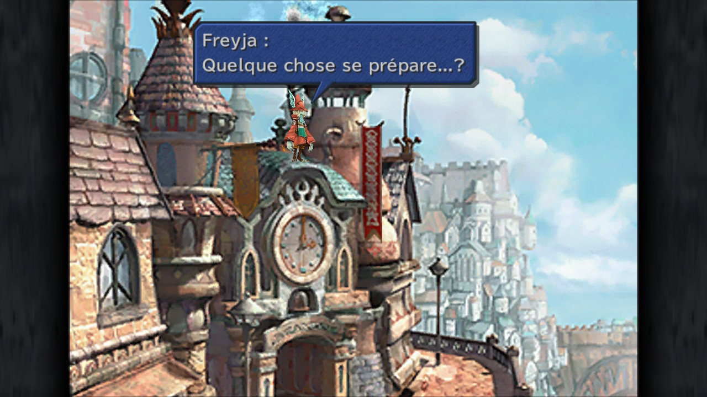
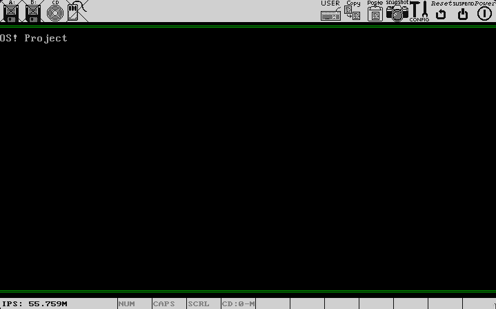
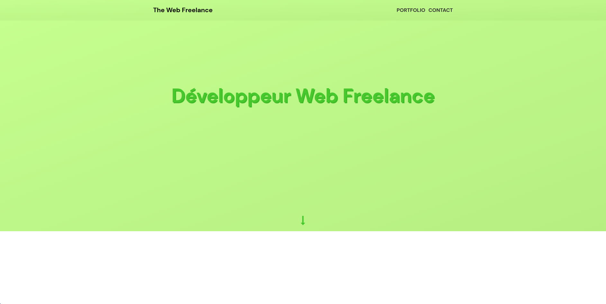

✒ About me.
Hello, i'm a French student, developper and cyber-security enthusiast who love to learn new things.
I have made a lot of development projects especially with PHP in the past.
Now I am more into low level languages like C or assembly.
I also like to learn some new stuff, I recently started kernel development which is really interesting and SDL2 to make some 2D multiplatform graphic apps.
✨ Hobbies
🔧 Ricing Linux
As I use Linux as my primary operating system, I went through the fundamental question: which distribution use?
From this, I have started customize my new fresh Debian install by installing from scratch the X Server, Window Manager, notifications deamon et cetera. Dealing with config files and stuff like that.
Today, I am still improving my skills in this domain and that's partly what made me decide to write my own kernel.
Me actually writting this site from my i3wm battlestation! 💻 CTFs
Since i hear about what is cyber-security (fight with black hats to protect important data etc...), I thought it was super cool and so I made my mind starting to do CTFs
Those are pretty fun games where you need to break a system or get around some security to get the beloved flag.
Root Me is a famous French website who do those kind of things.
🕹 Video Games
I sometimes manage to play games. I love to play at some rythm games like Osu! or StepMania.
Recently, one of my friends initiated me to the Final fantasy serie so I started playing at FF9 which is a very cool game!
Final Fantasy IX on Switch ⌨ Work
Here is a non-exhaustive list of my projects.
OS!
Kernel development project still at the state of a prototype.
The boot screen of the kernel. CTF writeups
Writeups of some CTFs that I have made with my team.
MUSIC!
Music server and music players for Web and Android.

Boot9Strap-gm9-install-script
A Nintendo 3DS script used to automatically install Luma3DS custom firmware.
Test portfolio website
A simple website to showcast some of my web development skills.
📍 Contact
You can found me on Twitter at @Ooggule where I am pretty active but you can also found me on Discord : @Ooggle#2362.
Finally, you can from time to time found me in some IRC channels like #root-me at irc.root-me.org, or #osdev, ##adventofcode, ##asm, ##C++-general at chat.freenode.net.
Have a nice day! o/